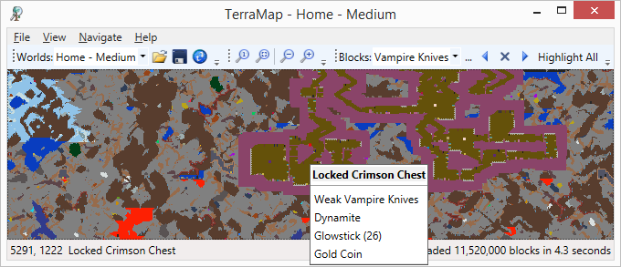
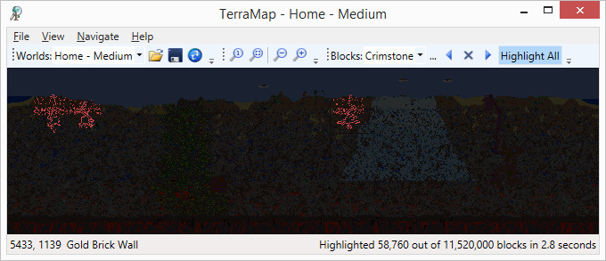

TerraMap Windows
TerraMap Windows
TerraMap Windows is an interactive Terraria v1.4.4 world map viewer that loads quickly and lets you pan, zoom, find blocks, ores, items in chests, dungeons, NPCs, etc.
For Terraria v1.4.4:
Download v1.4.19 »
View recent changes. »
For Terraria v1.4.3.2:
Download v1.4.13 »
For Terraria v1.4.2.3:
Download v1.4.11 »
For Terraria v1.4.1:
Download v1.4.10 »
For Terraria v1.4.0:
Download v1.4.9 »
For Terraria v1.3.5:
Download v1.3.54 »
Features
- Completely read-only, making it completely safe to use, with no risk of corrupting or overwriting your world files.
- Easily open your Terraria world files using either a pre-populated list, or by manually browsing to the .wld file
- Interactive, smooth pan and zoom using the mouse and/or keyboard shortcuts
- Drag with left mouse button to pan
- Use mouse wheel to zoom
- Use - and + keys to zoom
- Use the Zoom to Fit and Zoom to 100% buttons
- Choose a block or item from the drop down list, or use the block search window
- Use Ctrl+F to use the block search window
- Use the FInd Next and Find Previous buttons to pan, zoom, and select blocks that match, or chests that
contain the selected item
- Use F3 to find next
- Use Shift+F3 to find previous
- Use the Highlight All button to highlight all matching blocks, or chests that contain the selected item
- Right-click a chest to view a list of the items it contains
- Right-click a sign or grave marker to view its text
- Use the Save button, File->Save menu item, or Ctrl+S key to save a PNG image of your full world
- Use the Refresh button to reload and view changes while you play
- Use the Navigate menu to jump to the location of:
- Spawn
- Dungeon
- NPCs (Merchant, Mechanic, Arms Dealer, etc)
- Use the World Properties button or menu to view information, such as world size, moon phase, bosses killed, orbs broken, altars smashed, etc.
- Command-line image creation support (great for servers)

Use the Highlight All button to highlight all matching blocks, or chests that contain the selected item:
